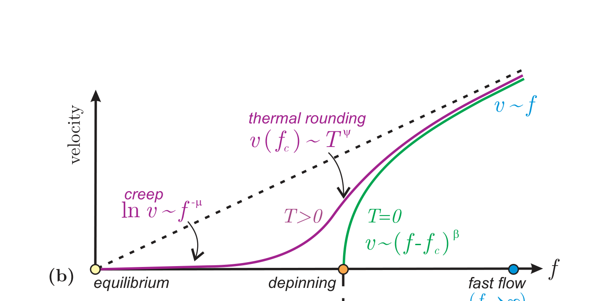
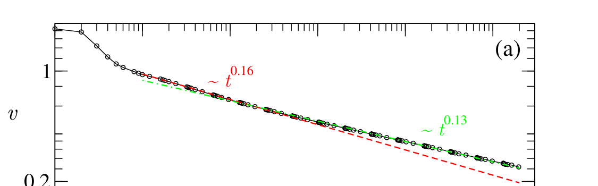
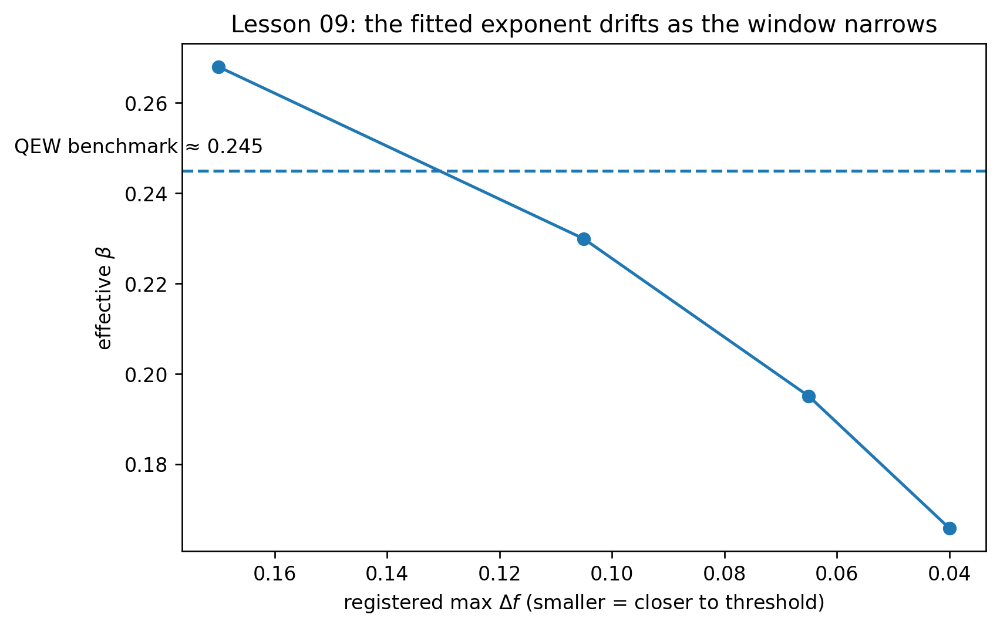
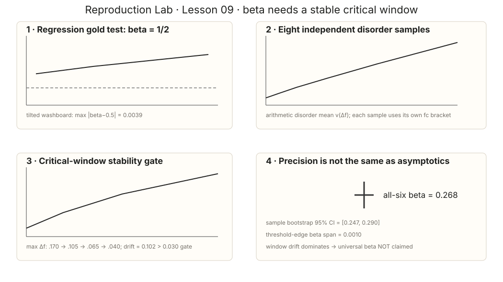

Learning Sliding Ferroelectricity / Reproduction Lab / Lesson 09
Paper2-orientedsource ↔ estimator mapping
β 的文献图不是用来“对答案”，而是告诉你为什么必须做 window audit
这一课现在把两件事分开：transport schematic 定义 β 的稳态关系；PRE 的 non-steady crossover 图提供“effective slope 会漂”的证据。我们的 window ladder正是在有限系统里检查这件事。
L09 有两个不同层次的文献锚点：Fig.1(b) 告诉我们目标 scaling law 是 v∼(f−fc)β；PRE Fig.5(a) 告诉我们临界动力学存在明显 crossover / corrections-to-scaling。后者正是为什么不能挑一个“最像 0.245”的窗口就宣布 β。
0 · 目标关系：β 在哪里出现？

1 · 为什么要扫 window，而不是盯住一个漂亮斜率？

文献给的警告
effective exponent 会随 scale / time window 漂。
本课的对应测试
固定规则逐步缩小 max Δf，重算 β。
通过条件
不是接近 0.245，而是 window drift 足够小。
2 · 我们的 window ladder 一眼看懂


| max Δf | βeff |
|---|---|
| 0.170 | 0.267993 |
| 0.105 | 0.229890 |
| 0.065 | 0.195041 |
| 0.040 | 0.165810 |
WINDOW-STABILITY GATE NOT PASSED。 β drift = 0.102183 > 0.030。即使 all-six bootstrap CI 覆盖 0.245 附近，也不能覆盖掉系统性的 window drift。
threshold-edge β span 只有 0.001004，因此主要问题也不是 L07 bracket 太宽，而是 finite-size / periodic-u geometry / crossover。
3 · 本课真正结论
可以说：β regression pipeline 在已知答案上工作，真实小系统给出一个随 window 漂移的 effective exponent。
不能说：测到了 universal β，或“因为某个窗口接近 0.245 所以属于 QEW”。